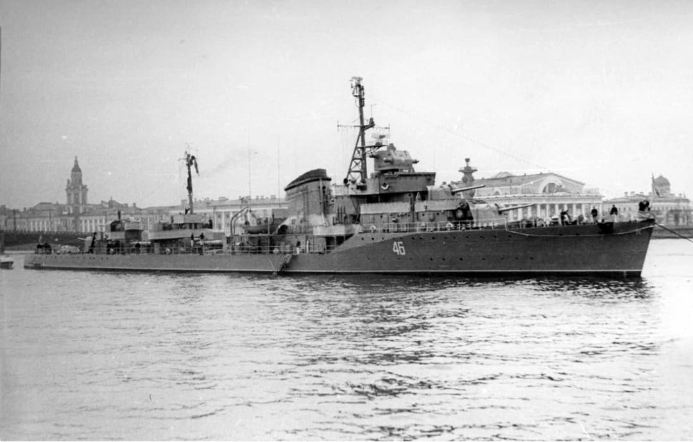
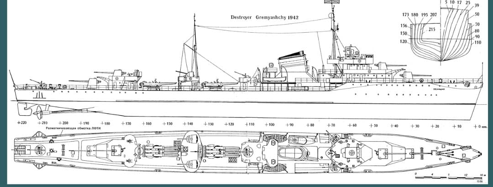
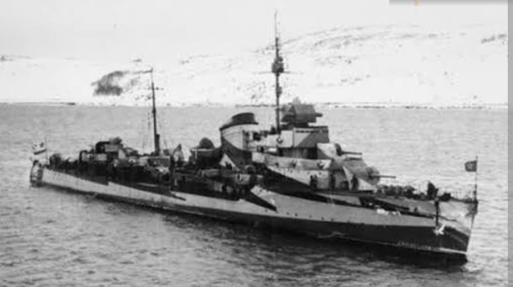

La colonne vertébrale des escadres de destroyers de la Marine soviétique

Le Gnevny (« Le Furieux ») est le navire tête de série de la classe de destroyers Projet 7. Conçus au milieu des années 1930 avec le concours d'ingénieurs navals italiens, ces bâtiments rapides et bien armés constituaient l'élément principal des forces de surface légères de l'URSS.
Inspirés des destroyers italiens de la classe Maestrale, les bâtiments du Projet 7 privilégièrent une grande vitesse de pointe et une puissance de feu concentrée autour de 4 canons de 130 mm.

Engagés dès juin 1941, les destroyers du Projet 7 prirent part aux opérations de mouillage de mines, aux bombardements côtiers de soutien et aux escortes de convois dans l'Arctique.

Construits à 30 exemplaires, plusieurs furent perdus du fait de leur vulnérabilité structurelle, ce qui conduisit à la création de la version améliorée Projet 7U.
Page du Musée HOP WW2 – Section Marine Soviétique